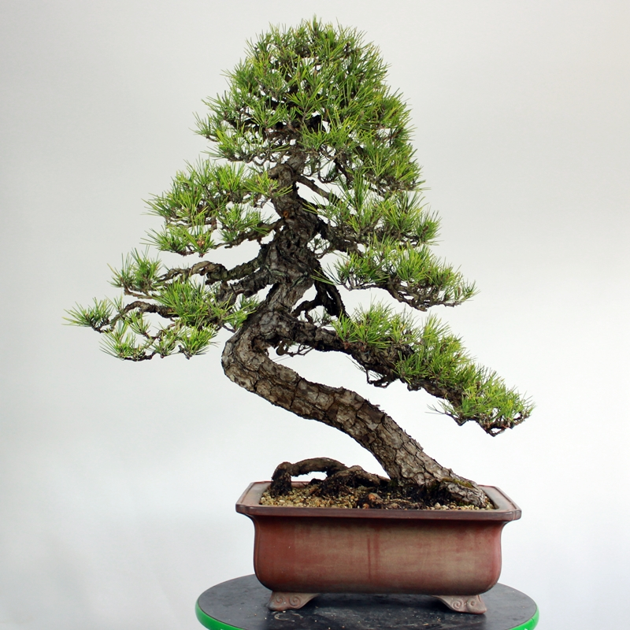

L'art de laisser le temps agir.
Vous venez d'acheter votre premier bonsaï, ou tout simplement curieux d'en apprendre plus sur cet art ?
Lisière, c'est un atelier à Bruxelles où l'on apprend les bons gestes et la philosophie de cet art qui
promet de récompenser celui qui sait attendre.

L'esprit Lisière
Apprendre à ralentir et à observer.
Le bonsaï fascine par son élégance, ce sentiment de force tranquille et de noblesse.
S'en occuper durant de longues années demande de la rigueur, mais c'est aussi apprendre que chaque
attention que l'on porte envers lui sera récompensée.
-
01 / Choisir son arbre
Selon votre espace, vos moyens, votre temps disponible. Chaque variété a ses propres besoins.
-
02 / Apprendre les gestes
Arroser, tailler, rempoter : réussir à maitriser l'essentiel pour un arbre en pleine santé.
-
03 / Grandir ensemble
Observer les saisons, répondre au besoin de notre bonsaï et l'accompagner. Un bonsaï en bonne santé peut vivre des siècles et passer de générations en générations, tel un patrimoine familial.
Venez à notre rencontre
Et si l'on prenait le temps d'échanger ?
Un premier bonsaï, un conseil ou l'envie d'apprendre : parlons de votre projet.
Prendre contact